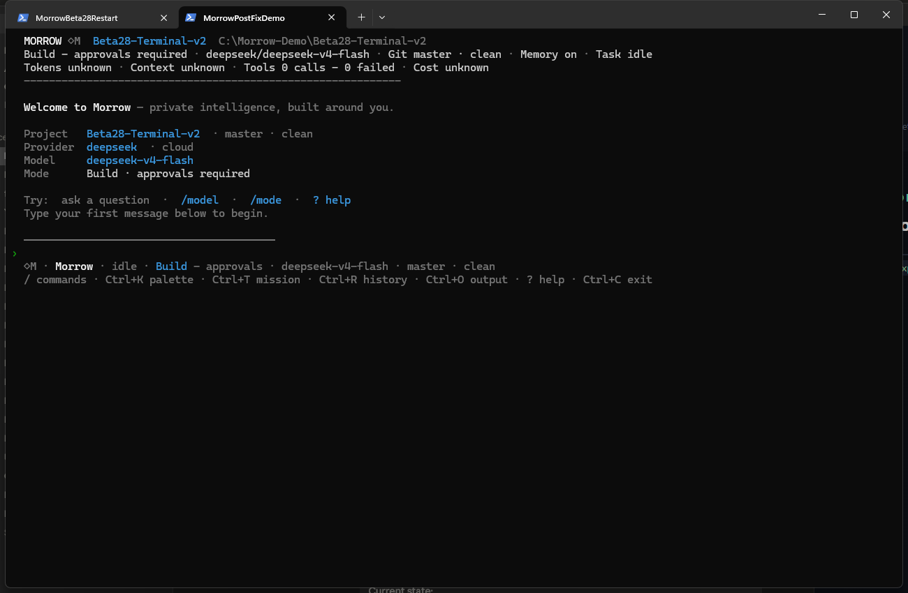
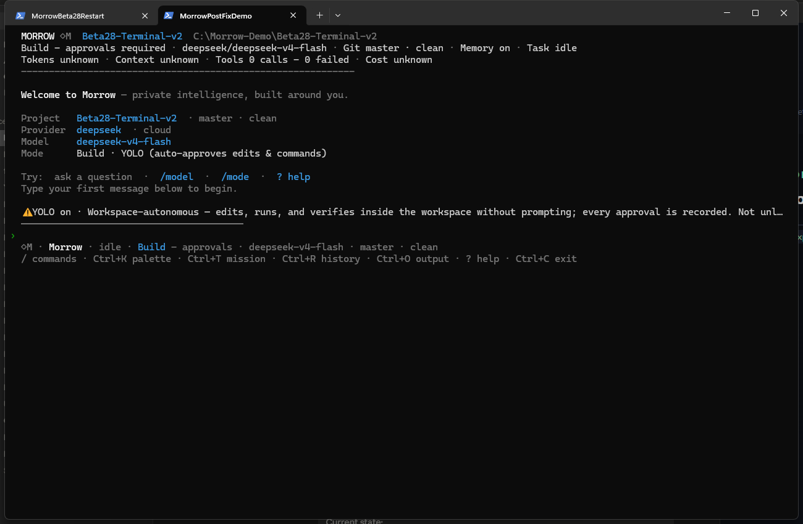
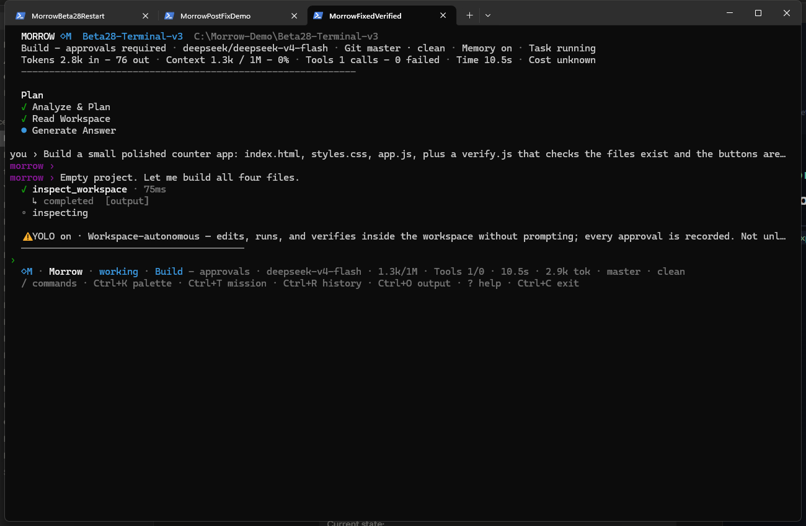
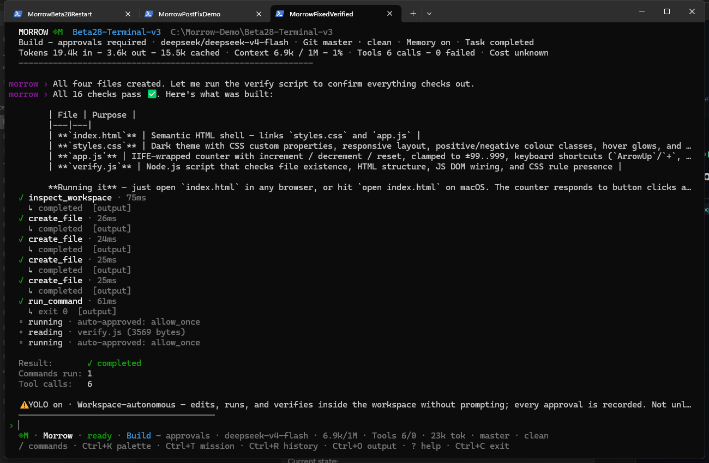
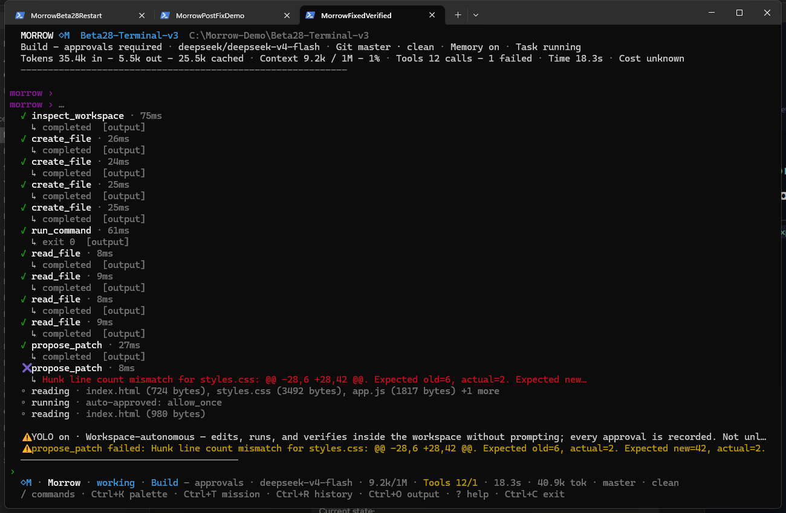
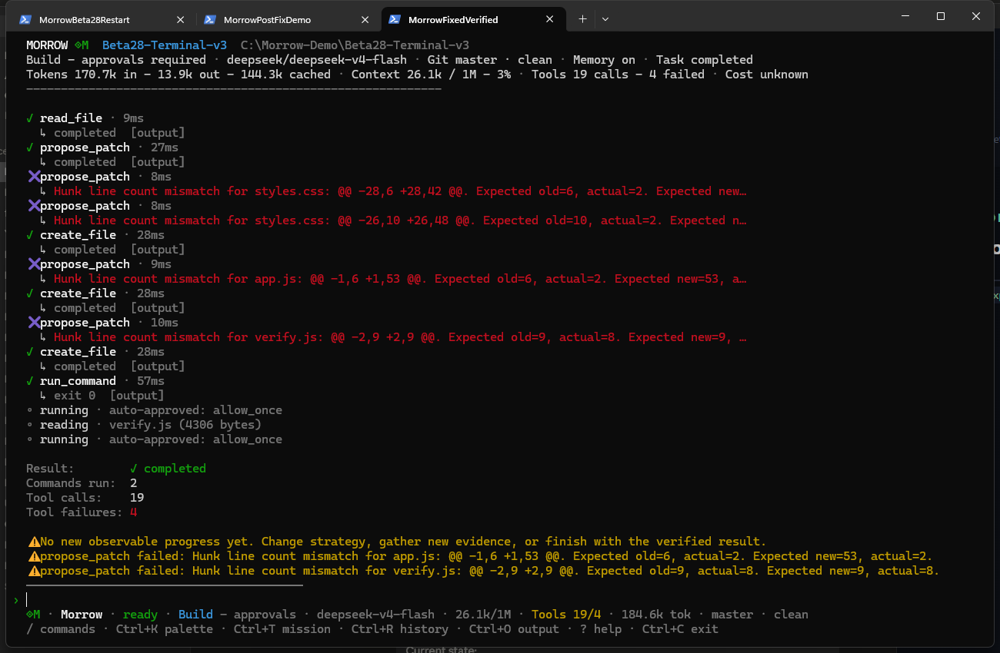
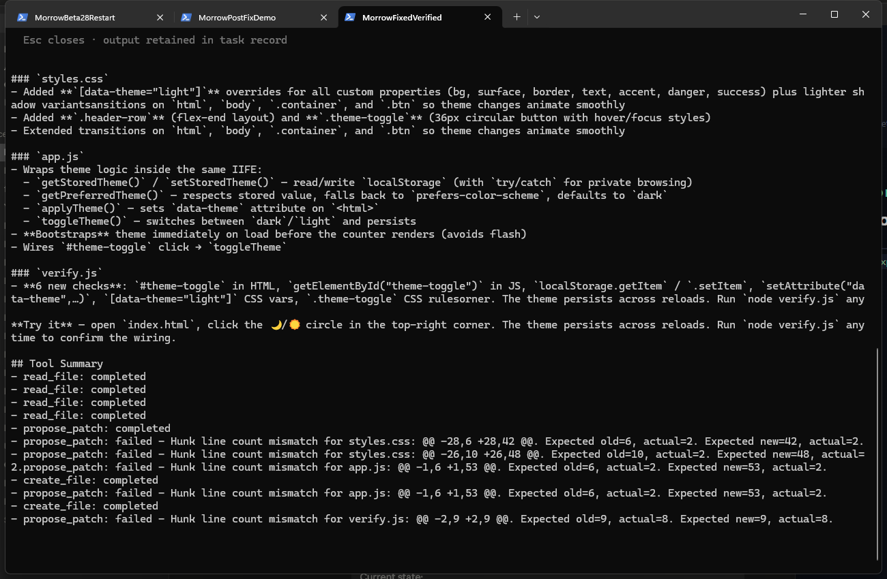
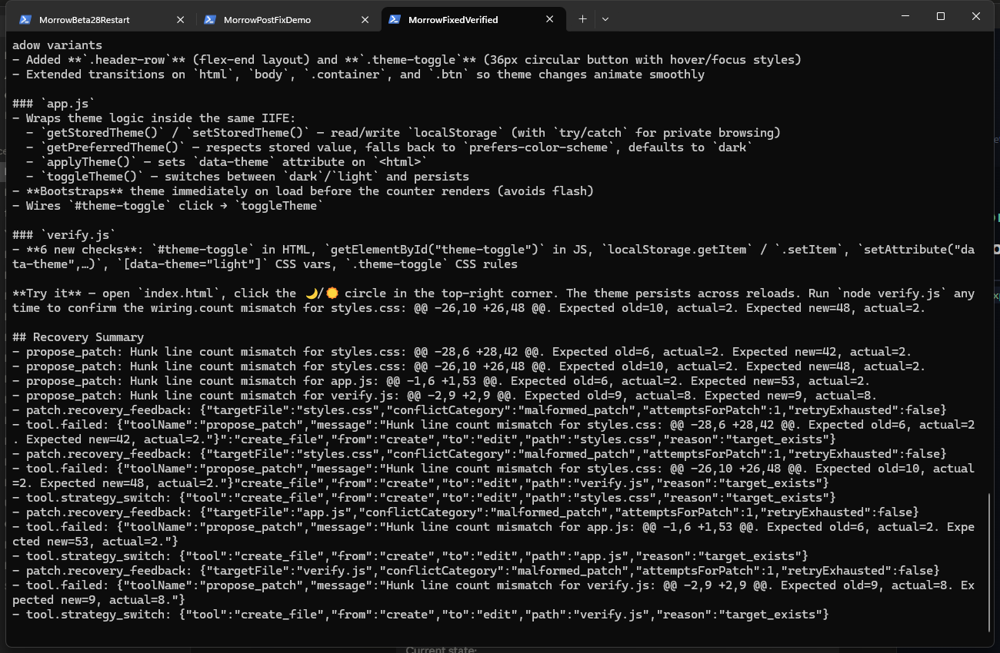
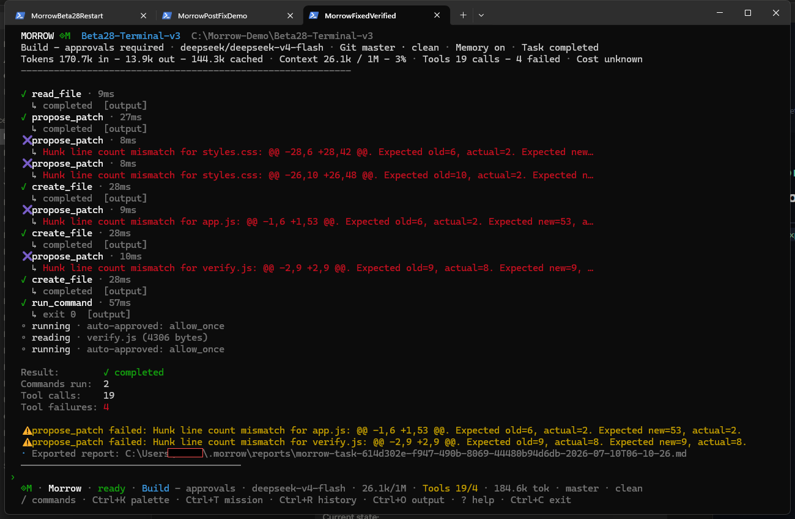
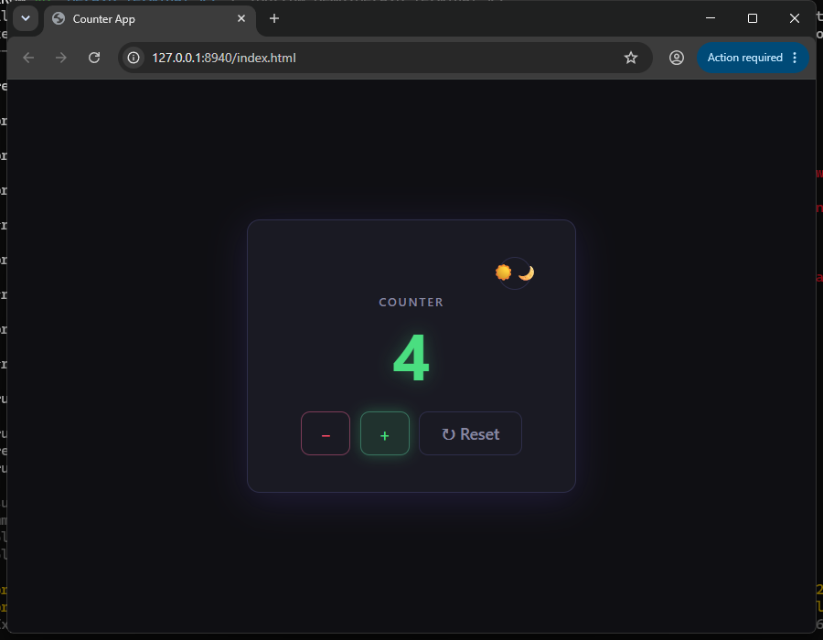

This deck documents two connected real sessions: one that surfaced a genuine report-integrity bug in the exported task report, and — after the bug was fixed and merged (PR #36) — a fresh verification run proving the fix against a real, live orchestrator with real API calls, real failures, and real recovery.
Assembling the original evidence package surfaced a real bug: the exported report's ## Final Answer contained the same planning sentence repeated 12 times.
ROOT CAUSENeither the orchestrator's ReAct loop nor the CLI's terminal state reducer tracked turn boundaries — every turn's narration was folded into one ever-growing message.
assistant.turn_started / assistant.turn_completed per ReAct turn, with a stable turnId and a final flag set only on the turn that produced no further tool calls.selectCanonicalFinalAnswer() in output-report.ts is the single source of truth used by /output, /output full, /export, and the one-shot --json path alike.## Intermediate Activity section; recovery events get ## Recovery Summary.MERGED46 new/updated tests, including a regression fixture built from the real corrupted task. Full validation clean twice. CI green.
OS: Microsoft Windows 11 Home, 10.0.26200
Terminal: Windows Terminal, real ConPTY session
Node: v24.13.1
Orchestrator: run directly from fixed source via pnpm start
Provider / model: DeepSeek — deepseek/deepseek-v4-flash (live API)
Workspace: C:\Morrow-Demo\Beta28-Terminal-v3
Pass 1 sent: 2026-07-10T06:06:48Z
Pass 2 sent: 2026-07-10T06:08:15Z
IMPORTANTNo v0.1.0-beta.28 tag exists yet. This documents merged, pre-release code on main, not a shipped release.


/yolo on result and warning banner

Prompt: add a dark/light theme toggle with localStorage persistence. A real, unstaged failure occurred.

propose_patch failure on styles.css, live recovery in progressNOT STAGED4 real failures occurred across styles.css, app.js, and verify.js — each recovered via the real tool.strategy_switch escalation to create_file.



/output failures: clean Recovery SummaryVERIFIED BY DIRECT FILE READThe real exported .md file was read directly (not just screenshotted): ## Final Answer appears exactly once, the repeated-preamble phrase count is 0, and a new ## Intermediate Activity section bounds the 7 non-final turns instead of dumping raw narration.

/export confirmation (username redacted)node verify.js → exit 0, 20/20 checks (run independently via Bash, separate from Morrow's own check)evidence-manifest.json
localStorage; counter correctly does not (expected — only theme is persisted)DISCOVERED MID-VERIFICATIONThe first re-run attempt against the "fixed" code still showed the bug — traced to a stale, pre-fix orchestrator background service still running on port 4317 from ~36 hours earlier. Stopped it, started a fresh orchestrator from the fixed source, and re-ran clean. Documented rather than hidden.
CONFIRMED REALEvery screenshot, stat, and transcript excerpt traces to a specific tool call, exported report, or independently-run command listed in evidence-manifest.json. No video (OBS access denied, documented). No false beta.28-release claim — main is still versioned 0.1.0-beta.27.